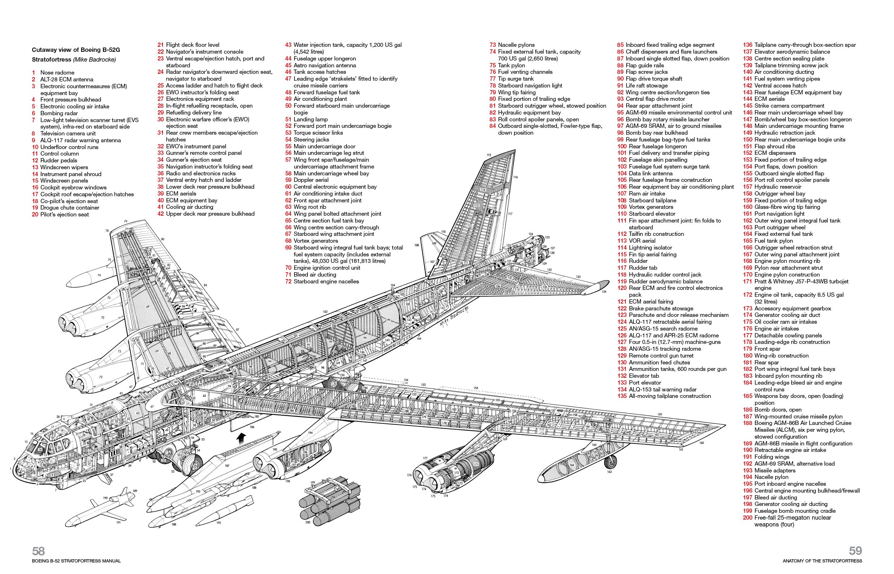

Part 1: The Readings, Videos, and Questions 1-5
1.) What is a good working definition of what a System is and perhaps what it is not?
A good working system consists of interdependent parts and groups that when combined, works together, function, networks, and operates as a whole. When one or more part of a system is making the process of a structure to be inoperative, then it
is not a good functioning system.
2.) For the 4 system definitions you were to look up please give in your own words what they mean and give an example of them for each case.
Modularity – refers to the concept of using interchangeable components that can be removed or replaced without affecting the system. An example of modularity is the use of lithium-ion battery. Battery cells, if charged, have the ability to charge
different devices.
Decomposability – when a part or a group breaks down, a system’s functionality is reduced to its original form.
Emergence – is when a part or group of parts only achieve a behavior when interacting together. An example would be a group of 100 underground miners working together to create a giant tunnel.
Chaos Theory – is a small change that can lead to different or even larger scale outcomes. For example, the 9/11 terrorist attacks led to over 800,000 deaths around the world.
3.) Give us your definition of what Tessellation means and give an example you encountered, not mentioned in the reading.
Tessellation is repeatedly using different shapes and patterns to cover a surface without gaps or overlaps. I worked in residential constructions and I’ve seen tessellation patterned tiles installed on floor and wall surfaces.
4.) What is The difference between ideas of Modularity and Tessellation? What are the properties that are in opposition with each other?
Modularity is interchangeable and its components work on its own; whereas the tessellation is not very versatile, as the positioning of every component must work with other components to perfectly fit and work in the system.
5.) What is the difference between designing something that has Complexity (aperiodic) vs being Uniform (periodic)?
Designing something periodic means using symmetry and repetitive patterns. On the other hand, an aperiodic design is using asymmetry shapes and patterns that fits but not necessarily repetitive and symmetrical as a whole.
Part 2:Revised Diagrams with the four System Concepts applied to 4 different diagrams
Modularity, Modularity
100 Elements, Decomposability

Not Visible, Emergence
Living, Chaos Theory